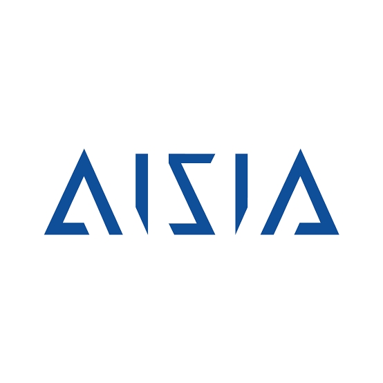
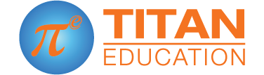

Xin chào, mình là Trung Bắc — Chuyên viên quản trị cơ sở dữ liệu tại SACOMBANK, tập trung vào hạ tầng dữ liệu và quan tâm đến Data Engineering.
- Làm việc với cơ sở dữ liệu Oracle, tích hợp dữ liệu và sao chép CDC.
- Quan tâm đến nền tảng dữ liệu, data lakehouse, hệ phân tán và LLM.
- Chuyên ngành Khoa học dữ liệu tại Trường Đại học Khoa học Tự nhiên, ĐHQG-HCM.
Nổi bật
Cuộc thi mô hình hóa bằng phương trình vi phân của SIMIODE. Xem bài thuyết trình
Học vấn

B.Sc. Mathematics & Computer Science
2022 – 2026University of Science, VNU-HCM
Data Science specialization · GPA 3.42 / 4.0
Kinh nghiệm

Thực tập sinh nghiên cứu
AISIA Lab · Hybrid
Data Engineering
Chuyên viên quản trị cơ sở dữ liệu
SACOMBANK
- Quản trị cơ sở dữ liệu Oracle production, bao gồm lưu trữ ASM, mã hóa TDE, sao lưu/khôi phục bằng RMAN và tối ưu hiệu năng SQL.
- Quản trị các luồng CDC Oracle GoldenGate, sao chép hàng tỷ bản ghi từ các hệ thống ngân hàng (T24, IBFT, CARD, PAY, v.v.) đến ODS/DWH.
- Chuyển đổi Oracle GoldenGate Classic sang kiến trúc Microservices, hỗ trợ sao chép SQL Server–Oracle, Oracle–Oracle và Db2–Oracle.
- Triển khai Oracle REST Data Services (ORDS) thay thế DBLink cũ bằng REST API bảo mật, hỗ trợ chuyển đổi sang SacomPay, nền tảng có khoảng 5,7 triệu người dùng.
- Triển khai và quản trị cụm Oracle Data Integrator (ODI) JEE agents trên WebLogic Server cho các quy trình ETL doanh nghiệp.
- Cấu hình cụm Oracle HTTP Server (OHS) làm reverse proxy cho 5 nền tảng doanh nghiệp (ODI, OAS, OFSAA, ORDS, OGG), bao gồm cấu hình SSL/TLS và DNS.
- Thực hiện vá lỗi Oracle RAC trên môi trường DC/DR và hỗ trợ vá lỗi Exadata (X7, X9M).
Công nghệ: Oracle 19c (RAC / ASM) · OGG · ODI · OHS · OAS · ORDS · Linux · Network
Thực tập sinh quản trị cơ sở dữ liệu
SACOMBANK · Chương trình thực tập sinh tiềm năng 2026
Dự án
Nghiên cứu
VietGreen: A Sustainability Data Platform for Vietnam
Dự án nghiên cứu · Đang phát triểnNghiên cứu cách tổ chức chỉ số môi trường, thông tin bền vững của sản phẩm và nguồn dẫn chứng trên một nền tảng dữ liệu có cấu trúc.
Kỹ năng chuyên môn
Ngôn ngữ: SQL, Python, C++, R
Cơ sở dữ liệu: Oracle Database 19c (RAC, ASM), SQL Server, PostgreSQL
Tích hợp dữ liệu: Oracle GoldenGate (CDC), Oracle Data Integrator (ETL), Debezium, dbt
Kỹ thuật dữ liệu: Apache Spark, Apache Kafka, Apache Airflow, Dagster
Nền tảng & Công cụ: Linux, Docker, Git, MinIO
Giải thưởng & Chứng chỉ
- SCUDEM XI 2026 — Giải Meritorious — COMAP · Xem bài thuyết trình
- Spring School on Statistics and Machine Learning — University of Science, VNU-HCM
- AIESEC Training & Business Case Program — AIESEC in Vietnam
- Vietnam Datathon 2023 — Top 24 / 160 Teams — Kyanon Digital
Hoạt động khác

Trợ giảng
Titan Education · Bán thời gian
- Hỗ trợ giảng dạy môn Toán lớp 10–12, chuẩn bị tài liệu và hỗ trợ học sinh trong giờ học.
- Chấm bài tập, góp ý và sửa lỗi; thường xuyên trao đổi với phụ huynh về tiến độ học tập của học sinh.
Kỹ năng: Toán học · Giảng dạy · Giao tiếp
Chia sẻ kiến thức trên YouTube
Thg 8/2021 – NayKênh YouTube: codeforfun
Chia sẻ kiến thức về DSA, cơ sở dữ liệu và kỹ thuật dữ liệu.